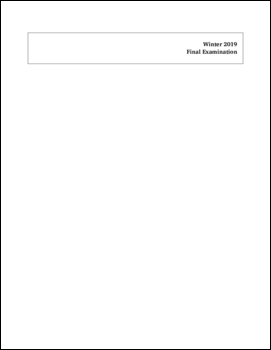

Designing cover page for an exam
Posted on April 15, 2019
Our university has a specific style that courses need to use as a cover page for exams, shown below. They circulate a Word template at the beginning of each term. Since I typeset my exams in ConTeXt, I decided to translate this cover page template to ConTeXt as well. In this post, I’ll explain how I went about doing this translation.

The user interface
The cover page is just a fancy table with certain information filled in. At a
high-level, I want to hide all the implementation details in an environment
file (which I’ll call env-coverpage), specify all the information using a
key-value driven interface, and then call a macro (which I’ll call
\placecoverpage) which typesets the cover page. Thus, my main tex file looks
like this:
\environment env-coverpage
% Other environments that I load
\starttext
\placecoverpage
[
course={ECSE 101: Course title},
term=Winter 2019,
exam=Final,
time={15 April 2019 (9:00 am)},
%
book=closed, % open, closed
print=doublesided, % singlesided, doublesided
type=exam, %multiple, booklet, exam
keepexam=no, % yes no
cribsheet=no, % yes no
dictionary=translation,
calculator=yes, % yes no
extra={Any extra instructions that need to go with the exam such as if
there is a formula sheet in the end.},
]
% Rest of the details of the exam
\stoptext
Now, I’ll explain how I design the \placecoverpage macro.
Because this is a one-off macro, I use the simplest mechanism to store the
key-value options: \setvariables. Thus, the basic skeleton of the
\placecoverpage macro is as follows:
\startenvironment env-coverpage
\define\placecoverpage
{\dosingleargument\doplacecoverpage}
\def\doplacecoverpage[#1]%
{\setvariables[exam][#1]%
\setups{exam:coverpage}}
\stopenvironment
Now all we need is to write the setup exam:coverpage to typeset the actual
cover page. I divide that into smaller components, again using the setups
mechanism.
\startsetups exam:coverpage
\setups{exam:banner}
\blank[2*big]
\setups{exam:courseinfo}
\blank[2*big]
\setups{exam:studentinfo}
\blank[6*line]
\setups{exam:instructions}
\stopsetups
Drawing the banner
I start by using a simple framedtext to typeset the banner.
\defineframedtext
[bannertext]
[
width=broad,
height=4\lineheight,
align={flushright,lohi},
foregroundstyle=\bfa,
frame=on,
]
\startsetups exam:banner
\startbannertext
\getvariable{exam}{term}
\\
\getvariable{exam}{exam} Examination
\stopbannertext
\stopsetups
Note that we stored the key-values using \setvariables{exam}{...}. Now, we
use \getvariable{exam}{key} to access the value of a particular key.
Now, I change the simple border of the frame to the two-lined frame in the
template. To do so, I set frame=off and use a metapost graphic as
background.
\defineframedtext
[bannertext]
[
...,
frame=off,
background=bannerlines,
]
\defineoverlay[bannerlines][\useMPgraphic{bannerlines}]
where
\startuseMPgraphic{bannerlines}
begingroup
linecap := butt ;
pickup pencircle scaled 2bp ;
draw topboundary OverlayBox shifted (0,-1.5bp);
draw bottomboundary OverlayBox shifted (0,-1.5bp);
pickup pencircle scaled 1bp ;
draw topboundary OverlayBox shifted (0,0.7bp);
draw bottomboundary OverlayBox shifted (0,0.7bp);
setbounds currentpicture to boundingbox OverlayBox ;
endgroup;
\stopuseMPgraphic
Now, all I need is to do is add the university logo. There are different ways to add the logo, but I chose the simplest option in this case. Just place the logo at the appropriate place using Metapost.
\startuseMPgraphic{bannerlines}
begingroup
...
label.rt("\externalfigure[mcgill-logo-bw.png][height=2\lineheight]",
0.5[llcorner OverlayBox, ulcorner OverlayBox]);
...
endgroup;
\stopuseMPgraphic
This completes the banner of the coverpage.
Adding the course information
This is perhaps the simplest part. I simply mid-align the course title and exam time.
\startsetups exam:courseinfo
\startalignment[middle]
\bfa\setupinterlinespace
\getvariable{exam}{course}
\blank[medium]
\getvariable{exam}{time}
\stopalignment
\stopsetups
Adding student information
At first I was thinking of using Metapost to draw the boxes for the student information but then simply used a table for no other reason than laziness.
\startsetups exam:studentinfo
\startTABLE
\setupTABLE[c][1,3][background=color,backgroundcolor=lightgray,
style=bold,
loffset=0.5em,roffset=1em,
toffset=0.25ex,boffset=0.25ex]
\setupTABLE[c][2][width=broad]
\setupTABLE[c][4,5,6,7,8,9,10,11,12][width=1.5em]
\NC Student Name: \NC
\NC McGill Id: \NC
\NC
\NC
\NC
\NC
\NC
\NC
\NC
\NC
\NC \NR
\stopTABLE
\stopsetups
Adding exam instructions
OK, so all the simple parts of the cover page are done. Now, let’s look at the fancy table for instructions. The instruction use multiple check boxes. I use FontAwesome to show these check boxes.
\usesymbols[fontawesome]
\def\FONTAWESOME[#1]{\inlinedbox
{\scale[height=1em]{\symbol[fontawesome][#1]}}}
\define\YES{\FONTAWESOME[check]}
\define\NO {\FONTAWESOME[check_empty]}
See my earlier post on using fontawesome to see why I use \inlinedbox.
Next, I define a helper macro to show a empty or ticked check box depending on the option:
\define[2]\CHECKBOX
{\doifelse{\getvariable{exam}{#1}}{#2}{\YES}{\NO}}
Finally, I use a four column table (with carefully chosen spanned cells) to show all exam instructions.
\startsetups exam:instructions
\midaligned{\bfa INSTRUCTIONS:}
\blank[halfline]
\bTABLE[width=broad]
\setupTABLE[each][each][offset=0.5em]
\setupTABLE[column][1]
[
style=bold,
align={middle,lohi},
background=color,
backgroundcolor=lightgray,
width=0.2\textwidth,
]
\setupTABLE[column][2,4][width=0.3\textwidth]
\setupTABLE[column][2,3,4][frame=off,topframe=on,bottomframe=on]
\setupTABLE[column][2][leftframe=on]
\setupTABLE[column][4][rightframe=on]
\bTR
\bTD[ny=6] EXAM: \eTD
\bTD CLOSED BOOK \CHECKBOX{book}{closed} \eTD
\bTD OPEN BOOK \CHECKBOX{book}{open} \eTD
\bTD \eTD
\eTR
\bTR
\bTD SINGLE SIDED \CHECKBOX{print}{singlesided} \eTD
\bTD[nx=2,rightframe=on]
PRINTED ON BOTH SIDES OF THE PAGE \CHECKBOX{print}{doublesided}
\eTD
\eTR
\bTR[topframe=off,bottomframe=off]
\bTD[nx=2] MULTIPLE CHOICE ANSWER SHEETS \CHECKBOX{type}{multiple} \eTD
\eTR
\bTR[topframe=off,bottomframe=off]
\bTD ANSWER IN BOOKLET \CHECKBOX{type}{booklet} \eTD
\bTD[nx=2, rightframe=on] EXTRA BOOKLETS PERMITTED: YES \eTD
\eTR
\bTR[topframe=off]
\bTD ANSWER ON EXAM \CHECKBOX{type}{exam} \eTD
\bTD \eTD
\bTD \eTD
\eTR
\bTR
\bTD SHOULD THE EXAM BE: \eTD
\bTD RETURNED \CHECKBOX{keepexam}{no} \eTD
\bTD KEPT BY STUDENT \CHECKBOX{keepexam}{yes} \eTD
\eTR
% FIXME: Add instructions for crib sheets
\bTR
\bTD CRIB SHEETS: \eTD
\bTD NOT PERMITTED \CHECKBOX{cribsheet}{no} \eTD
\bTD PERMITTED \CHECKBOX{cribsheet}{yes} \eTD
\eTR
\bTR
\bTD DICTIONARIES: \eTD
\bTD TRANSLATION ONLY \CHECKBOX{dictionary}{translation} \eTD
\bTD REGULAR \CHECKBOX{dictionary}{regular} \eTD
\bTD NONE \CHECKBOX{dictionary}{no} \eTD
\bTR
\bTD CALCULATORS: \eTD
\bTD NOT PERMITTED \CHECKBOX{calculator}{no} \eTD
\bTD[nx=2,rightframe=on]
PERMITTED (non-programmable) \CHECKBOX{calculator}{yes}
\eTD
\eTR
\bTR
\bTD ANY SPECIAL \\ INSTRUCTIONS \eTD
\bTD[nx=3,rightframe=on]
\getvariable{exam}{extra}
\eTD
\eTR
\eTABLE
\stopsetups
That’s it. We can easily get a fancy looking cover page! The complete files are below:
The env-converpage.tex file also contains the layout and font setups.
This entry was posted in Design and tagged tables, forms, metapost, fontawesome, coverpage, tutorial.